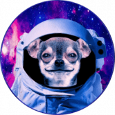 DogX DeFi DogX DeFi 在币安智能链（BSC）上提供四种产品： DogX Swap & Liquidity：是我们易于使用的交换协议，其设计灵感来自著名的基于 AMM 的交换协议，例如 Pancake S
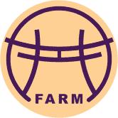 DojoFarm Finance DOJOFARM 是具有高年利率的下一代多链产量农业！在多边形和 BSC 上。 在审查了几种单产农业模型后，我们决定选择一种可以帮助最终用户长期获得最大收益的模型。我
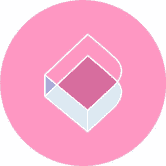 DokiDoki Finance 我们的合约代码不是 sushi/yfi/curve 的一个分支。所有合约都是从头开始开发的。 我们的网站和产品视觉设计也是独一无二的——仅为 Doki Doki Finance 创建，而不是从其他来源抄袭。
Doll.Finance DollSwap 从 PancakeSwap 和 Yield Farming 分叉，运行在币安智能链上的 Staking 平台。 DollSwap 由 DeFi Dolls 为 DeFi Dolls 构建。我们拥有一支由经验丰富的 Dolls 组成的专门团队，他们已经在加密领域工作了多年。 $DOLL
Dollarswap Dollarfuture 是一个跨链去中心化平台，提供去中心化交易所（Dex）、农业和流动性功能。 Dollarfuture Dex 允许用户根据提供的流动性以几乎零费用将一种代币换成另一种代币。
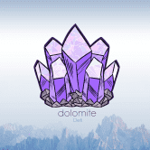 Dolomite Defi Dolomite Defi 是使用自动做市商 (AMM) 技术的去中心化交易所 (DEX)。该项目是 Goose Finance 的一个分支，目标是有机地成为币安智能链 (BSC) 上最有价值、最具吸引力和面向社区的
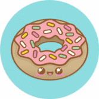 Donut Farm DonutFarm.Finance 是币安智能链 (BSC) 上奖励最高的分层收益农业自动复利项目，为 DONUT 代币的持有者和用户提供收益聚合。为了促进收益农业和复利过程的自动化，DonutFa
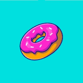 DonutDeFi DonutDeFi 是一种新的综合 DeFi 协议，允许轻松交换代币、农业机会和游戏。实施最高安全标准，这是在币安智能链上获得回报的一种有趣且安全的方式。当您使用 Donut 进行
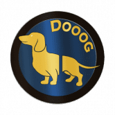 Dooog Finance 1.流动性锁定 流动性锁定是反鲸策略的一部分，以稳定代币价格。我们设置了 DOOOG-BUSD 矿池、DOOOG-BNB 矿池、DOOOG 单矿池的流动性锁定，自耕作开
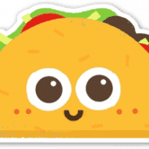 Dos Esposas Restaurante Dos Esposas Restaurante 只采购和使用最优质、最新鲜和最优质的食材。因为它们是最好的，所以它们保持价值并做出美味佳肴。 Dos Esposas 为 DeFi 带来了一种新方法，允许人们以独特的
Doveswap Finance DoveSwap Finance 是具有通缩治理令牌模型的下一代自动做市 (AMM) 去中心化交易所。我们是您在币安智能链和 Pancakeswap 交易所上运行的首选收益农场，还有许多其他功能可以让您赚取
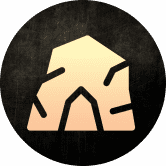 Draco Cave Draco Cave 是 Fantom 网络上的一个新的稳定 DeFi 代币，它帮助投资者保护他们的资金，因为我们提供一个透明的环境，让用户可以无忧地使用我们的服务，并有助于通过 Staking 带
Draco Force Draco Force 的最高价格是多少？Draco Force 在 N/A 上创下历史新高。 Draco Force 的最低价格是多少？Draco Force 的 N/A 处于历史最低点。 Draco Force 24 小时的交易量是多少？Dra
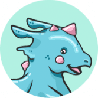 Draco.Finance Fantom Opera 上最好的算法稳定币之一，通过铸币税与 1 FTM 的价格挂钩。墓叉。 放弃所有权。Fantom Opera 上最好的算法稳定币之一，通过铸币税与 1 FTM 的价格挂钩。
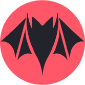 Dracula Protocol DeFi 生态系统近年来发展了很多。收益农业和流动性挖矿已成为黄金标准。但是，它通常与因通货膨胀和代币抵押不足而导致长期失败的巨大风险相关联。 在 Dracula 协
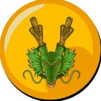 DragonBall Finance DragonBallFinance 是币安智能链网络上第一个完全去中心化、自给自足的一体化 defi 平台，在当前无聊的美食名称 defi 世界中带来了龙珠主题。 DragonBallFinance 将实施多种产品和机制，即使从长
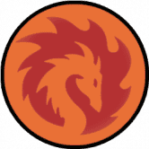 DragonBallSwap DragonBallSwap 是币安智能链上最新一代的收益农场和 AMM。该项目使用独特的机制，例如：自动燃烧机制、自动流动性、反鲸鱼、丰收锁定等。 我们的愿景是成为领先的
DrakeSwap DrakeSwap 是币安智能链（BSC）上的去中心化 AMM（自动做市商）协议。 DUCK & SWAN 代币是平台的原生 BEP-20 治理代币。用户可以通过在 DrakeSwap 上提供流动性来赚取 DUCK 代币，质
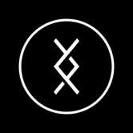 DRC Vault DRC Vault 是专为 DRC 持有者创建的安全非托管和 100% 去中心化应用程序。在 DRC Vault 中持有的 DRC 代币完全由用户控制和拥有，其他任何人都无法访问这些资金。 DRC Vault 具有直观
DreamCatcher Finance 捕梦网 被称为 GameFi，游戏金融现在像 AXS Infinity 一样成为 DeFi 世界的新趋势。 同时成为加密货币持有者、投资者和玩家真是太棒了。 随着 gamefi 的成长，Dream
Dripping Finance 与 RFI 克隆或具有疯狂 APY 的农业项目不同，Dropping Finance 分红系统是为长期可持续性而建立的，奖励太容易发放，导致项目价值在一周内消失。我们做事不
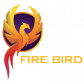 Firebird Finance Swap, Save, Earn. Only with Firebird. 探索火鸟金融，这是币安智能链 (BSC) 上领先的 DEX，拥有 DeFi 中最好的农场和 FBF 彩票。 它比 DEX 更好。行业领先的多链超级聚合器，为您提供最优惠的
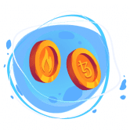 FlameDeFi FlameDefi 是一个基于 Tezos 区块链的项目，它结合了： 经典 DEX 单产农业 游戏 FlameDeFi 支持 Tezos 区块链上的其他项目。 Tezos 上的任何项目都可以将他们的农场添加到我们的 SpaceFarm 中，从而显
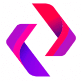 FlashLiquidity FlashLiquidity 是运行在 Polygon 主网上的去中心化 AMM 交易所。 该协议的主要区别在于，流动性提供者可以获得交易量的 0.25% 的费用以及与保持流动性池平衡相关的套利利润。 在 FlashLiquidity 上
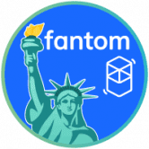 FLIBERO FINANCIAL Fantom Libero Financial Freedom 是一个变革性的 DeFi，具有双重奖励 159,058.06% 固定 APY 加上来自交易量的 226% BUSD APR 被动收入，每 10 分钟复合奖励，在一个简单的买入持有收益系统中，无需做
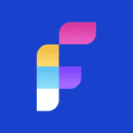 Fluity Fluity Protocol 是币安智能链上 Liquity 协议的一个友好分支。 Fluity 致力于实现 Liquity 的愿景，即提供无息贷款、高资本效率和抗审查稳定币的去中心化借贷协议。 Fluity 具有与 Liquity 相同的功
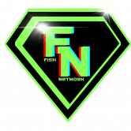 Fnet Blockchain Explorer 鱼网| $FNet Fish Network 是一个集成的社区生态系统，可促进用户在一个生态系统中的使用： NFT P2E小游戏 薄荷应用 交换应用 区块链浏览器 P2E游戏 钱包应用 为什么选
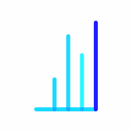 Focused Sharpe Index 聚焦夏普指数 (FSI) 旨在保持稳定、持续的上升趋势，以努力永远超越 BTC 和 ETH。以 40% 到 60% 的百分比将 ETH 多头用于 BTC 将允许或持续 90 度上涨，风险最小。 $FSI 基金不
Folks Finance 什么是大众金融？ Folks Finance 是服务于资本市场的领先协议，建立在 Algorand 区块链之上。该协议以去中心化和无需许可的方式提供借贷服务。通过借贷业务，Folks 用
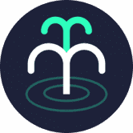 Fountain Protocol Fountain Protocol 是第一个由 Oasis 提供支持的跨链借贷平台。该协议使用户能够体验到高资本效率的 DeFi 资产一站式管理。 Fountain Protocol 是第一个由 Oasis 提供支持的跨链借贷平台。该协议使
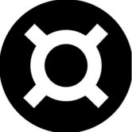 Frax Finance Frax 试图成为第一个实现两者设计原则的稳定币协议，以创建高度可扩展、无需信任、极其稳定且意识形态纯正的链上货币。 Frax 协议是一个包含稳定币 Frax (FRAX) 和治理
FullSail Finance BSC 上的第三代通缩收益农场和算法稳定币协议和 AMM 具有链上推荐计划,我们想让探索、跟踪和管理 dapps 对所有人都有洞察力、方便和有益。 我们从 2018 年开始，为全
FunBeast FUNBEAST 是基于 Astar 构建的以社区为中心的 AMM 和 DEX。 我们的主要愿景是为我们的用户提供一站式的 Defi 平台。 FUNBEAST 提供 Astar 链上最低的交易费用。 我们的目标是创建一个一
Fundz Finance Fundz Finance 是一个自主的非托管去中心化基金管理平台，是 Avalanche Network 上基金管理的支柱。该协议使用 TraderJoe 作为交易场所。 Fundz Finance 使其用户能够安全地创建/管理和加入去中心化
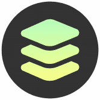 Fuse Studio 一个用户友好的应用程序，允许任何人在 Fuse Network 上启动支付系统。这包括使用 ERC-20 标准发行补充货币，作为主要交换手段或创建激励系统。 Fuse Studio 具有强大的工具，允
FusionFinance FusionFinance 是一个收益农场，基于核电站主题在 BSC 上实施了质押机制。此外，我们的推荐代码可用于提高连锁反应的速度！保持安全并继续耕种！ 自 2010 年成立以来，我们
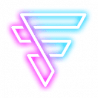 Futura Finance Futura Finance (FFT) 通过允许投资者通过选择 ADA、BNB/BUSD、CAKE、DOT、ETH、FFT 或 Futura dApp 中的代币组合来控制自己的支出，从而增强了反射代币